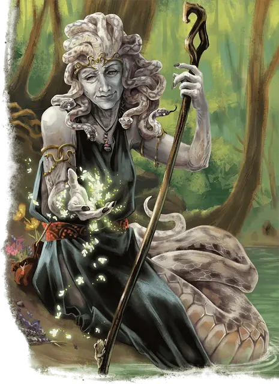

Эвриала
Euryale
Средний Монстр (Медуза, Друид), нейтрально-добрый, именной НИП

Класс Доспеха 17 (природный доспех)
Хиты 297 (35к8 + 140)
Скорость 30 футов (в форме медузы, 50 фт. в форме змеи), лазая 50 футов (в форме змеи)
| мод | спас | ||
|---|---|---|---|
| СИЛ | 21 | +5 | +5 |
| ЛОВ | 16 | +3 | +9 |
| ТЕЛ | 18 | +4 | +10 |
| мод | спас | ||
|---|---|---|---|
| ИНТ | 12 | +1 | +7 |
| МДР | 20 | +5 | +11 |
| ХАР | 15 | +2 | +2 |
Навыки Восприятие +11, Медицина +11, Природа +13, Проницательность +17, Уход за животными +11
Сопротивление урону дробящий, колющий, рубящий от немагических атак
Иммунитет к урону яд
Иммунитет к состояниям испуг, окаменение, отравление, очарование
Чувства тёмное зрение 60 футов, пассивное Восприятие 21
Языки Общий, Друидический
Опасность 18 (20000 опыта)
Бонус мастерства +6
Особенности
Легендарное сопротивление (3/день). Если Эвриала провалит спасбросок, она может вместо этого сделать спасбросок успешным.
Особое снаряжение. Эвриала владеет одним камнем послания [sending Stone];второй находится у Астерии [Asteria].
Действия
Мультиатака. Эвриала совершает три атаки. Если она в форме змеи, то одна из атак может быть Сжиманием.
Сжимание (только в форме змеи). Рукопашная атака оружием: +11 к попаданию, досягаемость 15 футов, одно существо. Попадание: 16 (3к6 +6) дробящего урона, и цель становится схваченной (Сл высвобождения 19). Пока этот захват не окончится, цель получает 11 (2к10) дробящего урона в начале каждого своего хода. И Эвриала не может удерживать другую цель.
Змеиный укус. Рукопашная атака оружием: +11 к попаданию, досягаемость 10 футов, одно существо. Попадание: 12 (2к6 +5) колющего урона, и цель должна преуспеть в спасброске Телосложения Сл 18, иначе станет отравленной до конца следующего хода Эвриалы.
Изумрудная стрела (только в форме медузы). Дальнобойная атака заклинанием: +11 к попаданию, дистанция 120 футов, одна цель. Попадание: 18 (4к8) урона кислотой.
Использование заклинаний (только в форме медузы). Эвриала накладывает одно из следующих заклинаний, не требующее компонентов заклинания и использующее Мудрость в качестве базовой характеристики (Сл спасброска от заклинания 19):
Неограниченно. : искусство друидов [druidcraft], бесследное передвижение [pass without trace];
2/день каждое. : чудо-ягоды [goodberry], малое восстановление [lesser restoration], поиск существа [locate creature], движение почвы [move earth], путешествие через растения [transport via plants];
Бонусные действия
Смена формы. Эвриала превращается в Огромную змею или возвращается обратно в Среднюю форму медузы. Вся её статистика, за исключением того, что описано в блоке статистики остается неизменной. Всё несомое и носимое им снаряжение не превращается. Она принимает свою форму медузы, если умирает.
Окаменяющий взгляд (перезарядка 4-6). Эвриала выпускает окаменевающую магию из своих глаз в виде 30-футового конуса. Каждое существо в этой области должно совершить спасбросок Телосложения Сл 18, если только существо не ослеплённое. Если спасбросок провален на 5 или больше единиц, существо мгновенно становится окаменевшим. В противном случае провалившее спасбросок существо получает 14 (4к6) урона силовым полем и начинает превращаться в камень, становясь опутанным. Опутанное существо должно повторить спасбросок в конце своего следующего хода, становясь окаменевшим при провале или оканчивая эффект при успехе. Окаменение длится до тех пор, пока не будет использовано заклинание высшее восстановление [greater restoration] или подобная магия.
Существо может использовать свою реакцию, если она доступна, чтобы закрыть глаза, для избегания спасброска. Если существо делает это, оно становится ослеплённой до конца своего следующего хода.
Легендарные действия
Эвриала может совершить 3 легендарных действия, выбирая из представленных ниже вариантов. За один раз можно использовать только одно легендарное действие, и только в конце хода другого существа. Эвриала восстанавливает использованные легендарные действия в начале своего хода.
Перемещение. Эвриала перемещается на свою скорость. Это перемещение не провоцирует атак.
Ядовитый удар (стоит 2 действия). Эвриала совершает одну атаку Змеиным укусом. Если цель отравлена, атака дополнительно наносит 16 (3к10) урона ядом.
Описание
Когда Эвриала закончила свою карьеру авантюриста, она переехала в Кэр Офидиан, небольшое убежище во Внешних землях. Там Эвриала начала вести тихую жизнь садовника, и проводить свое время, ухаживая за растениями, которые выращивает вокруг своего дома. Однако, если Астерия позовет её на помощь, Эвриала без колебаний отправится через мультивселенную, сражаясь зубами и когтями, для защиты своей сестры.
У Эвриалы окаменяющий взгляд и ядовитые змеиные волосы, как у других медуз. Но, как древний и могущественный друид, Эвриала часто принимает облик огромной змеи, когда ей угрожают. Она достигла полного контроля над своим окаменяющим взглядом, что делает ее невосприимчивой к его воздействию и позволяет использовать его, не находясь в обличье медузы. Несмотря на свою пугающую внешность в облике змеи, Эвриала в глубине души остается целительницей и хранительницей.